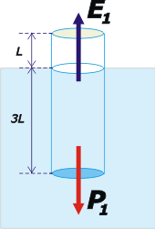

NO ME SALEN
EJERCICIOS RESUELTOS DE FÍSICA DEL CBC
FLUIDOS - PRINCIPIO DE ARQUÍMEDES |
|

|
| |
| Adicional NMS 14)* Un cilindro hueco de altura 4L flota en el agua como se muestra en la figura 1. La figura 2 muestra al mismo cilindro después de habérsele introducido un lastre que pesa la quinta parte del peso del cilindro. Entonces, la altura de la porción de cilindro que sobresale de la superficie del agua será: |
 |
|
a) L/5 b) 2L/5 c) L/2 d) 3L/5 e) 3L/4 f) L/6 |
|
|
| Como tantas veces, tenemos dos situaciones que llamaremos 1 y 2, como en las figuras, que están relacionadas entre sí. Empecemos describiendo la primera. |
|
|
|  |
|
Como el cilindro está flotando en equilibrio, las dos únicas fuerzas que actúan sobre él serán iguales, en módulo, entre sí:
P1 = E1
Donde P1 es el peso del cilindro vacío y E1 es el empuje que recibe del agua en esa situación.
Por otro lado, el Principio de Arquímedes nos asegura que ese empuje es igual al peso del líquido desalojado, o sea, el peso de la cantidad de agua desplazada por la parte sumergida del cilindro. El volumen de esa parte es igual a la sección del cilindro, S, por la altura sumergida, 3L. Entonces:
E1 = ρ . S . 3 L
|
Donde ρ es el peso específico del agua, que sé cuánto vale, pero que espero no tener que utilizar.
Ahora vamos a la situación 2. |
 |
|
Nuevamente tenemos un equilibrio. Si llamamos P2 al peso del cilindro cargado, entonces llamaremos E2 al nuevo empuje que hace el agua que, admitirás es mayor que antes.
P2 = E2
Y ese nuevo empuje, según Arquímedes será igual a:
E2 = ρ . S . X
Donde X es la longitud de la parte sumergida del cilindro en esta nueva situación.
¿Qué es lo que relaciona ambas situaciones?: los pesos. |
|
|
|
Es dato del ejercicio que el lastre agregado vale un quinto del peso del cilindro vacío, entonces:
P2 = P1 + P1/5
P2 = 6 P1 / 5
Ya tenemos todo para resolver el ejercicio. Primero igualemos las dos ecuaciones que describen la situación 1 y seguidamente las de la situación 2. Acá van"
P1 = ρ . S . 3 L
P2 = ρ . S . X
En la última, podemos reemplazar P2 por su igual.
6 P1 /5 = ρ . S . X
O, lo que es lo mismo:
P1 = ρ . S . 5 X/6
Ya lo tenemos...
ρ . S . 3 L = ρ . S . 5 X/6
Fijate, no interesaba conocer el valor del peso específico del agua ni la sección del cilindro:
3 L = 5 X/6
De donde X, o sea la parte del cilindro sumergida en la situación 2, vale:
X = 18 L /5
Pero la pregunta del ejercicio es cuánto sobresale, no cuánto hay sumergido. De modo que bastará con restar esa parte a la altura total del cilindro (que no ha cambiado, sigue valiendo 4L). Si a esa parte de arriba la llamo Y, entonces:
Y = 4L – X
Y = 4L – 18 L /5
|
|
espero que te acuerdes de cómo se suman y restan las fracciones |
|
|
|
| Bonito. |
|
|
| |
|
 |
*Este ejercicio me lo envió por gentileza José Velásquez, y pertenece al Curso de Admisión UNI, Lima, Perú, 2011.
DESAFÍO: Resolver el mismo ejercicio, pero ahora en lugar de tratarse de agua se tratade un líquido extraño cuya densidad es 2,5 veces mayor que la del agua. |
|
| |
| |
|
| Algunos derechos reservados.
Se permite su reproducción citando la fuente legítima, o sea, este sitio. Última actualización
jul-11. Buenos Aires, Argentina. |
|
|
| | |
|
|